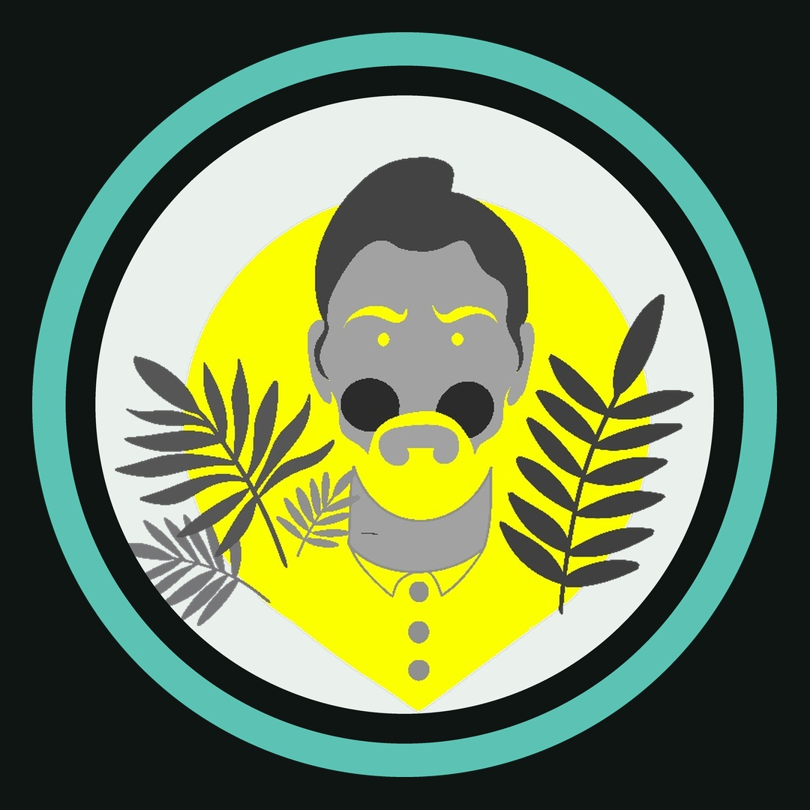

alluxe.iaConstruire avec l'IA, sans être développeur
Le kit du constructeur.
Les 12 prompts que j'utilise vraiment pour construire avec Claude et ChatGPT, dans l'ordre où je m'en sers. Copie, remplace les crochets, colle.
⬇ Télécharger le kit (PDF)Gratuit · sans inscription · 6 pages
Ce qu'il y a dedans
- Le prompt qui évite les fausses idéesProposer des idées testables, avec ce qui prouverait qu'elles sont fausses.
- Le prompt pour ce genre de bugSoupçonner l'outil de test avant le code testé.
- Transformer l'idée floue10 questions avant la moindre ligne de code.
- Le cahier des chargesCe que ça fait, ce que ça ne fait pas, ce qui peut casser.
- DécouperDes étapes qu'on peut tester une par une.
- Automatiser ta propre tâcheLa chaîne, les outils, et un mode essai qui n'envoie rien.
- Le prompt de fin de sessionQue l'IA se souvienne de tes décisions la fois suivante.
- Le chercher chez toiVérifier qu'un réglage est vraiment appliqué partout.
- Avant de donner un accès à une IALe pire qu'elle pourrait casser, et 3 protections.
- Les 4 cases ensembleRôle, tâche, contexte, format : la méthode complète.
- Les instructions à collerUn assistant qui te répond comme tu aimes.
- Le faire écrire par l'IATes instructions personnalisées en 150 mots.
Chaque semaine sur Instagram : les coulisses d'un vrai système construit avec l'IA, ce qui a cassé, et comment le refaire chez toi.
Suivre @alluxe.ia →
Suivre @alluxe.ia →